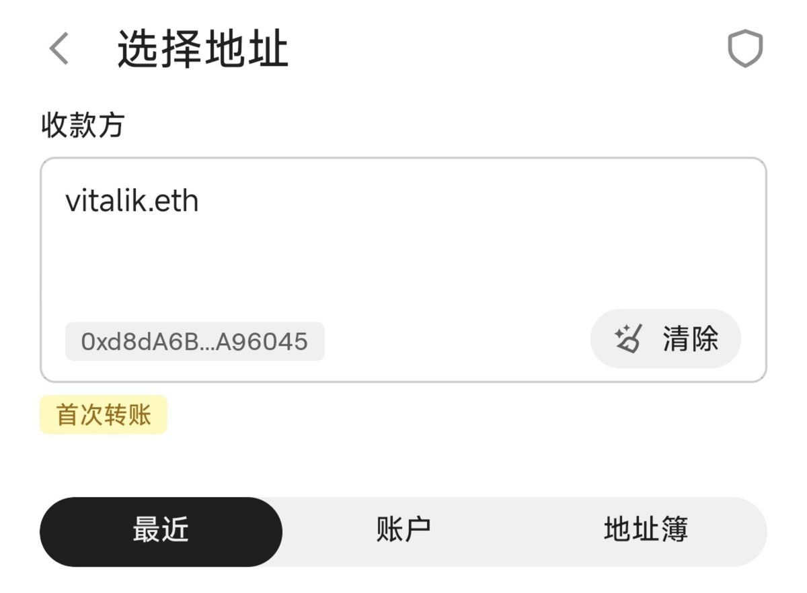

洛铃🦊Magic Caster
@LolingVerse
@PPZS001 给地址加别名很重要！

洛铃🦊Magic Caster
@LolingVerse
https://t.co/CKhj6348QT
PP - 钱包实习生
@PPZS001
转账只核对 前四+后四 位就是在给黑客送钱。
但当你知道了黑客的成本，
转账时要核对多少位地址你就心里有数了～
成本模拟视频如下：👇👇👇 https://t.co/snRPIAoxR9